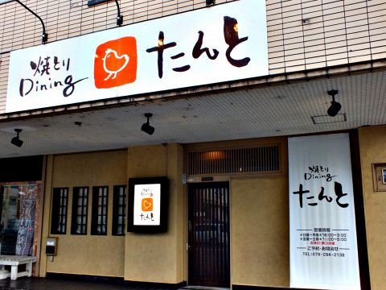

店舗情報

| 店舗名 | 焼き鳥Dinningたんと |
|---|---|
| 所在地 | 石川県野々市市扇が丘9-20扇ケ丘ビル1F |
| TEL | 076-294-2138 ※お問合せの際は「ホームページ」を見たと言うとスムーズです。 |
| 営業時間 | （日～木）18:00～翌3:00（L.O. 2:30） （金・土）18:00～翌5:00（L.O. 4:00） |
| 定休日 | 第3水曜日 |
| アクセス | 金沢工業大学前バス停 徒歩約5分 |
| カード | 可 VISA、MASTER、JCB、AMEX、Diners ※PayPay使えます。 |
| 総座席数 | 40席 |